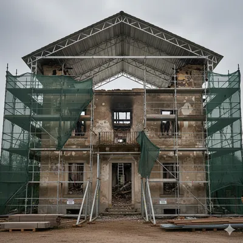
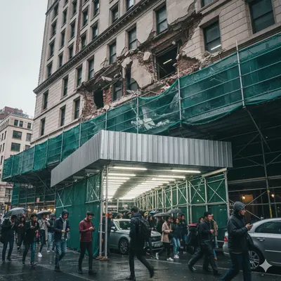
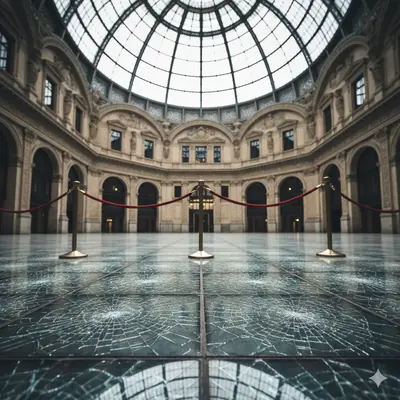

The "Tin Hat" Emergency Recovery – Didsbury
The Problem: A major fire in an 1880s villa left the structure without a roof, exposed to heavy autumn rain. The internal floors were severely weakened, making standard internal support impossible. The client needed a way to seal the building from the elements immediately, but traditional scaffolding loads would have collapsed the remaining masonry.


The Solution: We designed a specialist bridging scaffold that utilized heavy-duty beams to span the entire width of the building, transferring all weight to the external load-bearing ground. We then installed a "Tin Hat" temporary roof system—a corrugated aluminum canopy—allowing the internal restoration teams to work in a bone-dry environment despite the winter weather.
The Result: We saved the building from further water decay. By bypassing the fragile interior, we provided a safe working platform that allowed the roof to be rebuilt from the outside-in, preserving the historic facade.
The Pedestrian Gantry – Deansgate
The Problem: A high-end retail unit needed urgent masonry repairs on a Grade II listed storefront. Located on one of Manchester’s busiest pedestrian thoroughfares, the city council prohibited any scaffolding that would block foot traffic or narrowing the pavement for more than 48 hours.


The Solution: We engineered a heavy-duty pedestrian gantry (pavement specialist scaffold). Erected during a single overnight shift, the structure used high-clearance steel beams to create a "tunnel," allowing thousands of shoppers to pass safely underneath. The upper levels provided a fully boarded, debris-netted platform for stone masons to work without dropping dust or tools onto the street.
The Result: The retail unit remained open for business with zero lost footfall. The stone restoration was completed ahead of schedule thanks to the secure, high-capacity working decks.
The Internal Birdcage – Salford Quays
The Problem: A commercial office atrium required a massive LED screen installation and ceiling acoustic treatment. The 15-metre height and polished marble floors meant that traditional mobile towers were too unstable and would crack the expensive flooring.


The Solution: We deployed an Internal Birdcage Scaffolding system with specialized "sole boards" and rubber matting to distribute the weight and protect the marble. This created a solid, multi-level platform across the entire 6-metre width of the atrium, allowing electricians and acoustic engineers to work simultaneously at different heights.
The Result: The project was completed in half the time compared to using single-person lifts. Our system provided a safe, "dance-floor" style platform that ensured zero accidents during the high-risk vertical installation.
The Cantilevered Support – Ancoats
The Problem: A canal-side apartment block needed balcony reinforcements. Because the building was right on the water's edge, there was no ground available to base a traditional scaffold. Water-based barges were deemed too expensive and logistically difficult for the 3-week project.
The Solution: We designed a Cantilevered (Hanging) Scaffold. Using the building’s own structural steel frame as an anchor point, we projected beams out from the upper windows to "hang" the working platforms downwards over the water. Every component was double-tethered to prevent any tools or fittings from falling into the canal.
The Result: We provided full access to the exterior balconies at a fraction of the cost of a barge-based system, with zero impact on the canal's water traffic.
×